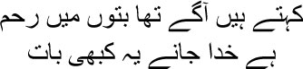
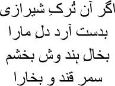
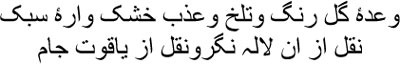
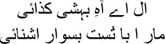
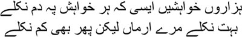
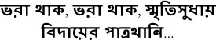
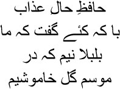

7

People say Goddesses were merciful once
The Lord knows which era they’re referring to
 lthough life in Kale Mahal was lonely, Manto bhai, I never forgot all that Agra gave me till the age of thirteen. The air and water of Agra were part of my soul. The jewels of my memory are still to be found scattered on every one of Agra’s streets. The ishq that tore my heart apart had Agra as its playground. Untasted love dripped from every flower in the gardens, the leaves of every tree seemed to have a caress for me. To tell the truth, Manto bhai, Agra put the bright blue sky inside me. Every now and then, a Falak Ara would rise in this sky as its adornment. She was a perennial fountain of laughter. I would gaze at her in wonder, and, returning my glance, the necklace of stars would change its colour every moment. What an exhibition of hues it was. Only in the paintings made in Jahanpanah Akbar’s art gallery were such colours to be seen. Who was she? Poori zindagi guzar gayi Manto bhai, my entire life passed but I could not identify her, could not reach out and touch her. Something unusual happened one day. I was walking by myself along the road in front of Chaharbagh. Suddenly I spotted a begum sahiba sitting in the garden, considerably older than me. Perhaps it was for her that Hafiz sahib had written:
lthough life in Kale Mahal was lonely, Manto bhai, I never forgot all that Agra gave me till the age of thirteen. The air and water of Agra were part of my soul. The jewels of my memory are still to be found scattered on every one of Agra’s streets. The ishq that tore my heart apart had Agra as its playground. Untasted love dripped from every flower in the gardens, the leaves of every tree seemed to have a caress for me. To tell the truth, Manto bhai, Agra put the bright blue sky inside me. Every now and then, a Falak Ara would rise in this sky as its adornment. She was a perennial fountain of laughter. I would gaze at her in wonder, and, returning my glance, the necklace of stars would change its colour every moment. What an exhibition of hues it was. Only in the paintings made in Jahanpanah Akbar’s art gallery were such colours to be seen. Who was she? Poori zindagi guzar gayi Manto bhai, my entire life passed but I could not identify her, could not reach out and touch her. Something unusual happened one day. I was walking by myself along the road in front of Chaharbagh. Suddenly I spotted a begum sahiba sitting in the garden, considerably older than me. Perhaps it was for her that Hafiz sahib had written:

This beauty with the black mole on her cheek
Touched my heart with her hands
Bukhara is nothing, I could even
Gift her Samarkand in sheer joy
The sight of her put me in a trance. Entering the garden, I called out from a distance, ‘Falak Ara.’
Begum sahiba didn’t even bother to turn. She only shook off the scarf covering her head and tossed her coiled hair loose. It was like a goblet being shattered and a spray of wine bursting forth, Manto bhai. Ah, I was reminded of Mir sahib’s sher at the vision of those tresses …

Can you unravel the mystery of her coiled hair, Mir?
It’s neither a chain, nor a snake or trap. What is it?
‘Falak Ara,’ I called again.
This time Begum sahiba turned towards me. Describing her smile is beyond me. It reminded me once again of Hafiz sahib’s sher …

Fill my cup with the light, sweet,
Madly intoxicating, taste
Of the sharp-edged wine
Whose colour is just like a flower’s
— Tum kaun ho? Who are you? She waved me over to herself.
I went forward hesitantly. She approached me as well. Grasping my hand, she whispered, ‘Who’s Falak Ara?’
Face to face with her loveliness, how could I speak? I could not summon up a single word. ‘Who’s Falak Ara?’ she asked again.
This time I took courage in my hands, saying, ‘I don’t know.’
— Where did you come across this name?
— In the skies of Agra.
Begum sahiba laughed.
— So this name is written in Agra’s skies?
— Yes it is.
— Have you seen it?
— Yes I have.
— When? Kab dekha?
— Har roz. Every single day.
— Do you know this sher of Mir sahib’s?
— Tell me.
— Phir kuchh ek dil ko beqarari hai, sinh jua-e-zakhmkaari hai. My heart in turmoil again is looking for an assassin.
Truly, Manto bhai, my heart had turned restless by then. I had set out in search of the very person who would break my heart once again. What option did I have but to seek her out? I had no house of my own, I simply had to look for a home, but in the process I crossed one dozakh after another, one hell after another, the road was a long winter night, ur-Rahman ur-Rahim, I screamed silently, save me, Al-Bashir, grant me good fortune but once.
Do you know what happened then, Manto bhai? Strolling about Chaharbagh, holding my hand, she stopped before a cage. A flock of mynahs was flying about inside. Begum sahiba glanced at me. Do you know what kind of look it was? It seemed to hold Hafiz sahib’s sher:

Which forest are you in, bewildered deer?
Our love is ancient, don’t you remember?
If a man can raise his eyes to a beautiful woman after hearing this sher, Manto bhai, I will say he has no idea what ishq is. All you can do after this is bow before such a woman’s feet and say:

Yes, Manto bhai, each one of my thousands of desires puts me on the verge of death. How many have been fulfilled? Many—and yet, too few. And that is why we keep living, isn’t that so? We wait, but still the glass isn’t filled. Looking at her feet, I sang to myself:

May this farewell glass always brim with sweet memories …
I don’t know where this song came to me from, Manto bhai. I had never heard it before. Who knows where things come from? From some remote past, or even from the distant future. Is it because the past holds the future that the sky glows so brightly? But our lives, they just flicker like burnt embers. Does it not hurt to flicker like this, Manto bhai?
The mynahs in the cage chirped as they flew about. Begum sahiba said, ‘There’s a Falak Ara in there too, let me see if you can spot her.’
I looked at the bird. Suddenly, I don’t know what came over me, I pointed to one particular bird and said, ‘That’s Falak Ara.’
The mynah was perched on a rod.
Looking at me in astonishment, Begum sahiba said, ‘How did you know? Have you seen her before?’
— No.
— Then how?
— She’s trembling so much.
— Who?
— Falak Ara.
— Why? I could discern a blue tinge on Begum sahiba’s throat.
— She wants to talk to someone.
— To whom?
To whom, indeed? Do you suppose I knew, Manto bhai? Begum sahiba cupped my face in her hands as though it were a goblet. ‘Who are you?’ she whispered.
I couldn’t tell her, Manto bhai, I just stood there in silence, but in my head I said:

Hafiz sahib really seemed to have written about me. Whom can I tell all this, I’m in a wretched state, it’s the month when flowers bud, and yet the nightingale won’t sing.
— How did you know that my name is Falak Ara too? Begum sahiba’s voice wafted out like a subtle perfume from a vial.
— I don’t know.
— Tell me how you knew.
— You’re Falak Ara—you—you alone are Falak Ara. There’s no one else.
My dream was shattered, Manto bhai. None of this is the entire truth. Just a khwab, a dream that I had one day. If you want to know about my life, you have to hear about my dreams too. Like a dream I had one night in which Ustad Tansen walked past the houses of Fatehpur Sikri, holding my hand, before leading me into one of them. The rains came to the house that day, and I woke up drenched in sweat, shouting, ‘Kallu—where are you—Kallu beta …’
Kallu arrived at once. —Yes huzoor.
— Tarjuman-ul-ashq, I muttered.
— Huzoor?
— I am tarjuman-ul-ashq, I am the meaning of perfection.
— Yes, huzoor.
— Why do you keep addressing me as huzoor?
— What do you want, sir?
— Can you get me some this morning, Kallu?
— Some wine?
— Yes, huzoor. I smiled.
Kallu clutched my feet. —Forgive me, huzoor, but … in the morning …
— Just a little, Kallu.
— Why?
— I want to dream.
— What dream, huzoor?
— Falak Ara.
— You want to see a mynah, huzoor? Come with me, I’ll show you as many as you want.
— I want to see my Falak Ara, Kallu, you won’t understand.
Who was Falak Ara, Manto bhai? A dream. She was visible in the sky over Agra, but I knew I could never get her, my Falak mynah. She would remain imprisoned in a cage somewhere. Mir sahib once wrote, I asked how long will this rose be in bloom; the rosebud only chuckled at my question, without answering. So how could I not recognize the mynah on the rod, my Falak Ara? When I saw her smile in Agra’s sky, I felt I had known her over many earlier births. And now Kallu wanted to show me a mynah? Tchah! Tell me, Manto bhai, can every mynah possibly become a Falak Ara?
Even today I wonder where Begum Falak Ara came into my dreams from. I had never seen a woman such as her before. I hardly had to be reminded that the ladies always remained behind the purdah. Then who was this Begum sahiba?
I saw her one evening at Moti Mahal. I didn’t call out to her, I only watched her from a distance. She kept taking her earring off and putting it back on. Unscrewing her nose stud, she examined its silvery lustre before putting it on again, took it off once more, re-examined it, and put it back on; could someone have been hiding in the nose stud, Manto bhai? Why would she keep taking it off otherwise? I was very curious to know what the nose stud contained. I went up to her.
‘You again?’ She was startled.
— Begum sahiba …
— Why do you chase me?
— Your nose stud …
— What’s in there?
— Why do you keep examining it then?
Begum sahiba burst into laughter. —Do you know how long one wants to go on dreaming?
— How long?
— All the way from jannat to jahannum, from heaven to hell.
— They’re one and the same, Begum sahiba.
— Call me Falak Ara.
Her voice shrouded me in a mist, Manto bhai.
— What?
— My name is Falak Ara. Don’t you know?
Taking my hand, Begum sahiba made me sit down by her side. She explored my fingers with hers. Then she asked, ‘What do you do?’
— Nothing.
— Meaning?
— I wander about in Kale Mahal. I roam the streets of Agra.
— What else do you do?
— I fly kites, I play chess, I drink …
— And women?
I laughed. I had tasted a woman’s body by then, Manto bhai, I knew what it was like. Each of their bodies was like a pashmina with a unique pattern. I had even had a romance with one of the courtesans of Agra. She was like husn-e-lav bam—as fresh as dawn. Have you ever seen a ripe castor apple? That’s what I was like. I had ripened just like a fruit ripens on its own. I could hear the buzzing of bees all over my body.
— Yes, I said, my head bowed.
— What about them?
— I have known them.
This is a rose-hued story, Manto bhai. She drew me to her breasts, showing me a pair of pigeons even more wonderful than the birds I had seen on the roofs of the houses. I rubbed my face against the beaks of those pigeons, what a pleasure it was to run my hands over their feathers, what joy. Do you know what I thought then, Manto bhai? That this world gets her but once, never again …
— Say it again, she had said, flicking my ear with her tongue, say it once more, mian …
She had a mole on her shoulder, Manto bhai, hidden in the depths of her coils. As you know, a mole is but a drop. A dot is what Creation began with. I lapped up that drop that day, it whetted a thirst within me that has not been quenched all my life. Sometimes it feels as though she was only a marvellous picture that I had walked into.
Don’t imagine for a moment that all this is true, Manto bhai. Lord be merciful—I confess that there are no truths in my life, everything is a story, a dream, a novel. I was very young then. Burying my face in Begum sahiba’s breasts, I said, ‘Don’t leave me.’
— Why not?
— Aap meri jaan hain, you are my heart, my life.
— Mujhe jaan na kaho, meri jaan. My heart, do not call me your heart.
— What should I call you?
— Falak Ara.
When I left Agra, Manto bhai, this necklace of stars slipped out of my life. Falak Ara lived on only as a name. A drop, a dot, the beginning. A beginning which also held the end, Manto bhai.